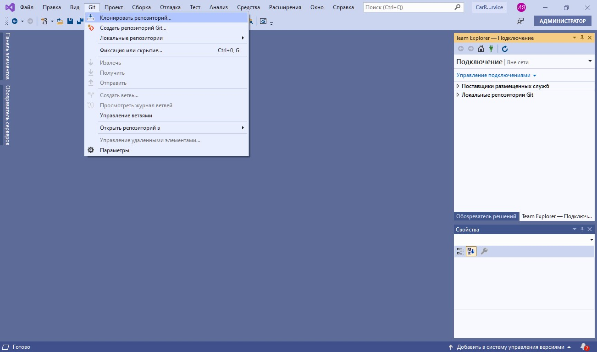

Основные возможности системы контроля версий
- Работа с локальным и удаленным репозиториями
- Создание и слияние веток
- Откат к предыдущим версиям
Важно
Локальный репозиторий позволяет управлять версиями на машине разработчика, в то время как удаленный репозиторий позволяет обмениваться данными с другими пользователями
Демонстрация работы с VCS
В данном занятии для управления версиями используется сервис Gogs, построенный на основе Git. Основные возможности VCS демонстрируются на примере написания приложения для вывода названий автомобилей, полученных с помощью API. В рамках решения задачи в master репозитории разрабатывается метод для вывода списка автомобилей, а в новом репозитории будет реализована верстка названий. Основные шаги:
- Настройка репозитория в Visual Studio
- Работа в master ветке: разработка функционала
- Работа в новой ветке: изменение верстки, демонстрация отката изменений, слияние веток
Важно
Обычно для решения новой задачи программист заводит новую ветку. После написания кода и его отладки изменения из новой ветки сливаются в master ветку
Настройка репозитория в Visual Studio
Создаем репозиторий
- Открываем шаблон
- Вводим название репозитория
- Выбираем необходимые параметры
- Создаем репозиторий
Клонируем репозиторий в среде разработки
- Указываем путь
- Клонируем репозиторий

Работа в master ветке
Работаем с кодом
- Создаем новый проект в репозитории
- Вносим изменения в код
Добавляем изменения в репозиторий
- Указываем название commit'a
- Делаем commit
3. Делаем push изменений
Важно
Commit является основным объектом в системе управления версиями и содержит информацию о внесенных изменениях
Создаем новую ветку
- Переходим к созданию ветки
- Указываем ее имя
- Создаем ветку
4. Делаем push новой ветки

Важно
Ветка в Git является указателем на один из commit'ов, которым чаще всего является последний commit
Изменяем код в master ветке
- Добавляем код метода для вывода списка автомобилей
- Создаем новый commit и делаем push изменений

Важно
В новой ветке код данного метода будет отсутствовать, т.к. ветка была создана перед реализацией метода
Работа в новой ветке
Работаем с кодом
- Реализуем верстку названий автомобилей
- Делаем commit
Как откатить изменения?
- Открываем историю commit'ов
2. Откатываем изменения
Важно
После отката изменений новая ветка вернется к предыдущему состоянию
Как слить ветки?
- Выбираем ветку для слияния
- Сливаем ветки

Итоги
Вы узнали об основных возможностях систем для управления версиями.